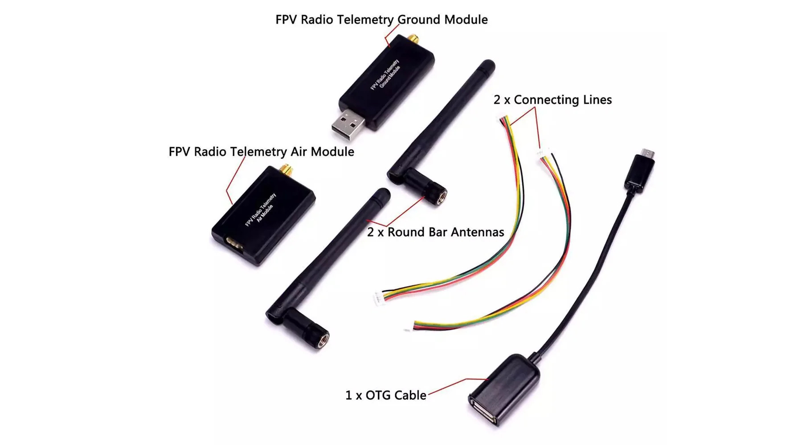

What is Telemetry?
A telemetry system sends real-time flight data from the drone to a ground station.
It allows the operator to monitor the drone’s condition during flight.
What Data is Transmitted?
- Battery voltage and current
- GPS position and altitude
- Flight mode and speed
- Attitude (roll, pitch, yaw)
- Warnings and failsafe alerts
How Telemetry Works
The flight controller sends flight data to an onboard telemetry radio.
This radio wirelessly communicates with a matching telemetry radio
connected to a laptop or ground station.
Basic Telemetry Flow
- Flight Controller → Telemetry Module (on drone)
- Telemetry Module → Wireless Link
- Ground Telemetry Module → Laptop
- Ground Control Software displays data
Common Telemetry Frequencies
- 433 MHz – Long range, common in research drones
- 915 MHz – Used in many commercial systems
- 2.4 GHz – Shorter range, higher data rate
Ground Control Software
- Mission Planner (for Ardupilot)
- QGroundControl (for PX4)
- APM Planner
Typical Use Cases
- Autonomous mapping missions
- Delivery drones
- Research UAVs
- Long-range surveillance